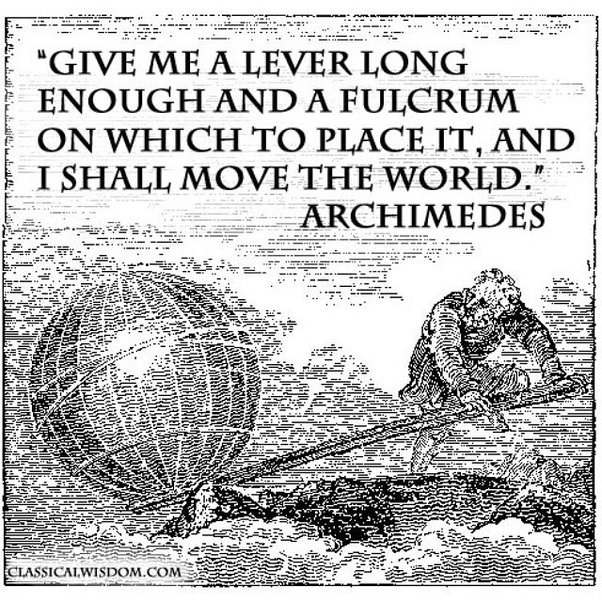

Financial Leverage
There are only three ways a smart person can go broke: liquor, ladies and leverage
- Charlie Munger
Finance
Leverage
What is leverage?
Leverage comes from the word lever. Remember the simple machine you read about in physics back in your school days. A lever helps us lift objects by applying lesser force.

Analogous to that, a financial leverage helps us invest larger sums by using less of our own money. In simple terms, when you invest borrowed money you are using financial leverage. Leverage boosts returns if the trade works favourably. However, it is a double edged sword. If the trade does not go as planned it will also exaggerate the losses. Leverage therefore works like a magnifying glass, magnifying both gains and losses.
Let’s work with an example. For the purpose of this discussion lets ignore the any additional cost including that of financing, brokerage etc… We will only focus on the impact of leverage in isolation.
Assume you have $100 and you borrow another $100 to invest a total of $200. This is a financial leverage of 1:1 i.e. for every $1 of your own money you are borrowing another $1.
The yield curve for the 1:1 leverage and no leverage positions are drawn in red and green colour respectively in the “Example” tab of Figure 1. The “X” axis is the return that a security can provide. The “Y” axis is the return experienced by trading in that security. Ideally the return experienced by trading a security should be the same as the return provided by the security, the green line. However, with leverage, the returns experienced gets magnified and thats the red line.
1:1 leverage yield curve used as an example in the text
A graph showing the yield curve at different leverage ratios
Move the slider to see how the slope of the yield curve change with leverage
Continuing with the “Example” tab, assume that the security moves favourably by 20%. Because of the leverage, your returns are $40 (20% of $200) which is significantly larger than the $20 (20% of $100) you would have made without it. A $40 return translates to a 40% return on your initial capital of $100, even though the security moved only by 20%. In percentage terms, a 1:1 leverage, doubles your gain percentage. A 10% gain in the security, causes you to gain 20% of your capital. Isn’t that awesome.
But lets also look at the flip side. What if the market security in the opposite direction by 10%. Because of the leverage, your loss will be $20 (10% of $200) which is again significantly larger than $10 (10% of $100) you would have lost had you not leveraged your position. Similar to the favourable case above, in percentage terms, a 1:1 leverage, doubles your loss percentage. A 10% drop in the security, causes you to lose 20% of your capital.
Leverage can be addictive, more so if you experienced beginner’s luck. However, if your trades don’t work out and you continue using leverage it can quickly wipe out your investing capital. The use of leverage without adequate caution can be disastrous.
Refer the “Plot” tab in Figure 1. I compare leverage to a slippery slope. The different coloured lines depict the yield curve at different leverages. The leverage ratio increases as the color transitions from black
If you want a more interactive feel to see how quickly the slope of the yield curve changes switch to the “Interactive” tab in Figure 1 and play with the slide rule. You would notice that the slope increases quite rapidly with every unit change in the leverage. And as the slope increases, so does the risk.
It is worth noting that certain financial instruments have leverage built into them. Many brokers provide leverage on intra-day trading. Derivative products like futures and options also provide leverage. These financial instruments therefore need to be used with proper knowledge and abundant caution. As Warren Buffett said, “When you combine ignorance and leverage you get some pretty interesting results”
But isn’t there a cost associated with financial leverage? When does it make potentially make sense to use it?
There is of couse a cost associated with financial leverage. Since financial leverage is nothing short of borrowing money, the borrower would need to pay a financing cost proportional to the interest rate and the principal being borrowed to the lender. While buying securities, this is often factored into the brokerage pricing.
The use of financial leverage could be justified, if the money is available cheap and the borrower expects to make a larger return than the financing cost. This way the borrower would be able to repay the borrowed amount and the financing cost and still retain a portion of the profits. However, since the markets can have a mind of their own and act finicky, it would make sense to hedge your leveraged positions to limit your losses should things not go the way you had thought it would.